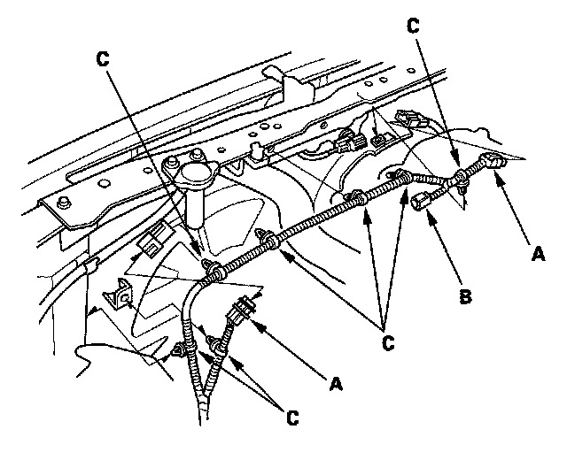
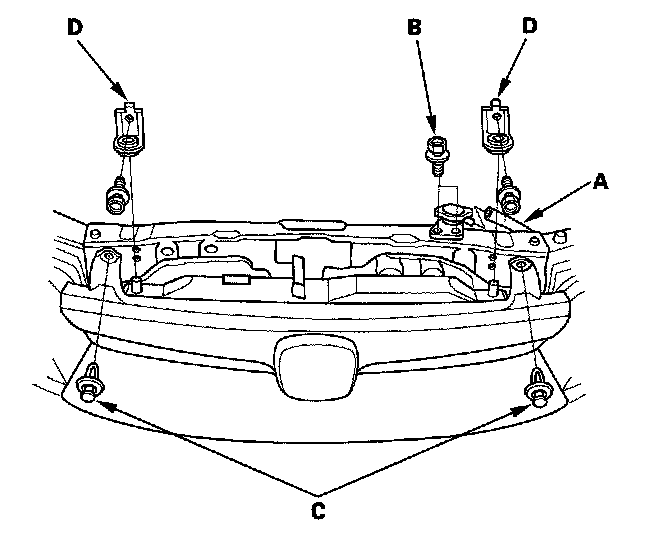
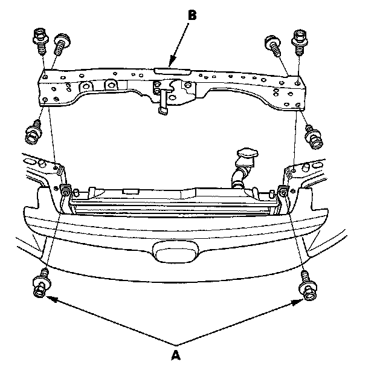
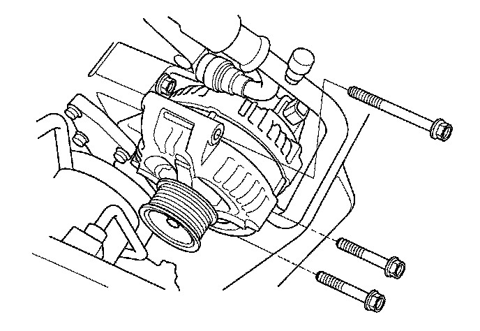
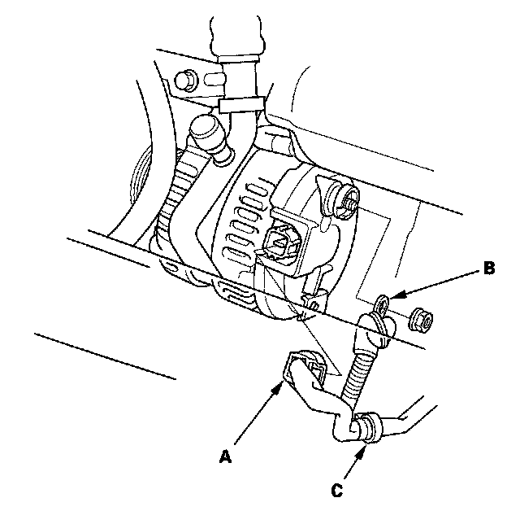
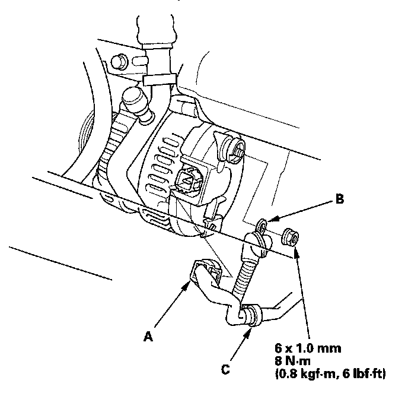
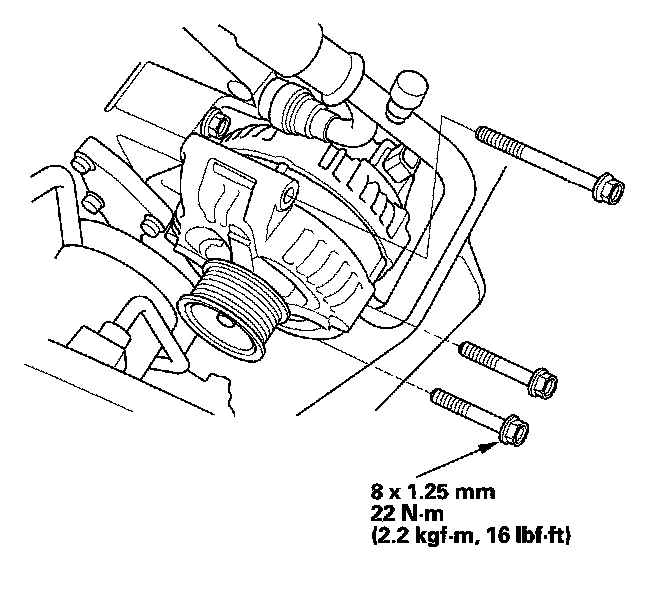
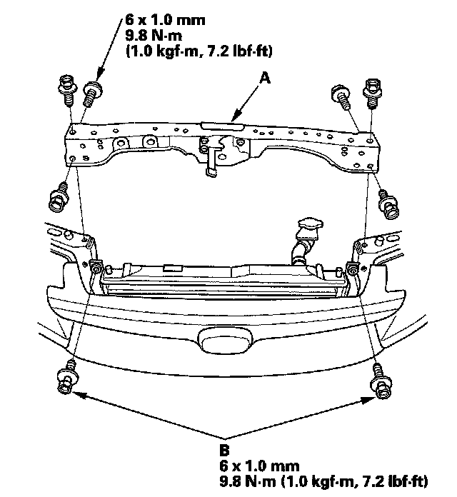
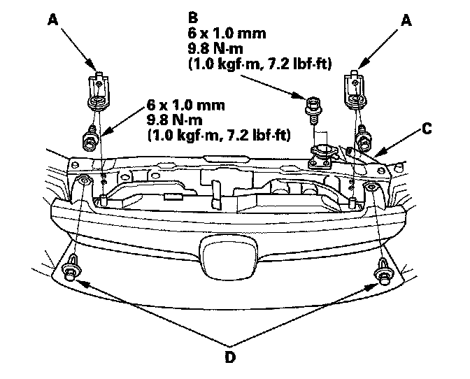
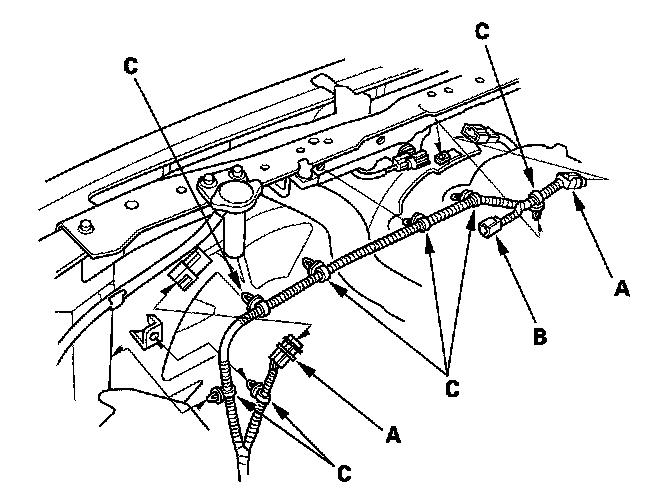

Removal and Replacement
Alternator Removal and InstallationREMOVAL
1. Make sure you have the anti-theft code for the audio system and the navigation system (if equipped), then write down the audio presets.
2. Disconnect the negative cable from the battery first, then disconnect the positive cable.
3. Remove the drive belt.
4. Remove the front grille cover.

5. Disconnect the fan motor connectors (A) and hood switch connector (B), then remove the harness clamps (C).

6. Remove the reservoir hose (A), radiator cap base mounting bolts (B), clips (C) and radiator upper brackets (D).

7. Remove the condenser bracket mounting bolts (A), then remove the bulkhead (B).

8. Remove the three bolts securing the alternator.

9. Disconnect the alternator connector (A), BLK wire (B) and harness clamp (C) from the alternator, then remove the alternator.
INSTALLATION

1. Connector the alternator connector (A), BLK wire (B) and harness clamp (C) to the alternator.

2. Tighten the three bolts securing the alternator.

3. Install the bulkhead (A), then install the condenser bracket mounting bolts (B).
4. Apply body paint to the bulkhead mounting bolts.

5. Install the radiator upper brackets (A), radiator cap base mounting bolts (B), reservoir hose (C), and Clips (D).

6. Connect the fan motor connectors (A) and hood switch connector (B), then install the harness clamps (C).
7. Install the front grille cover.
8. Install the drive belt.
9. Connect the positive cable to the battery first, then connect the negative cable.
10. Enter the anti-theft code for the audio system and the navigation system (if equipped), then enter the audio preset.
11. Set the clock.